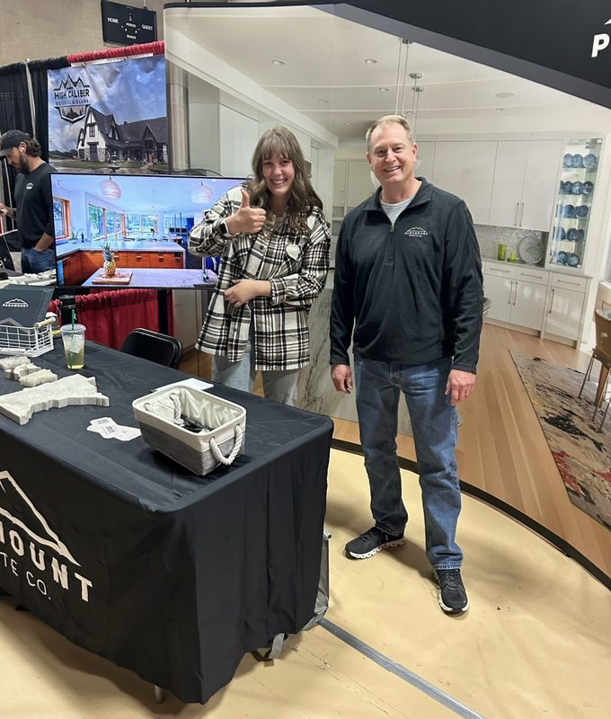
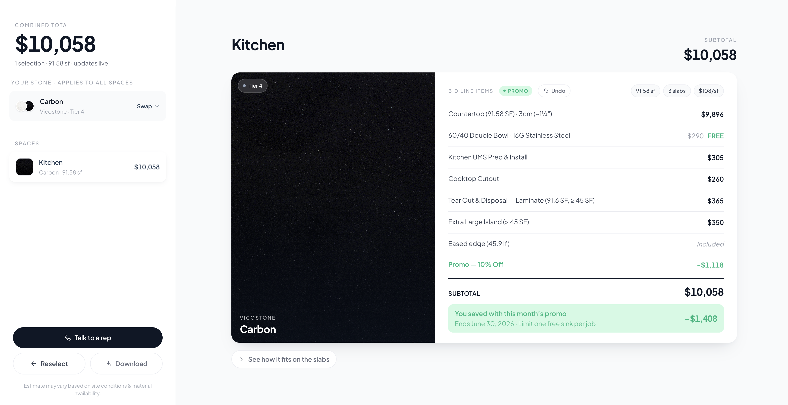
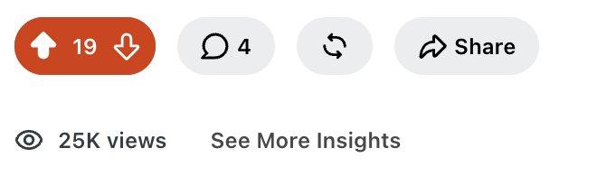
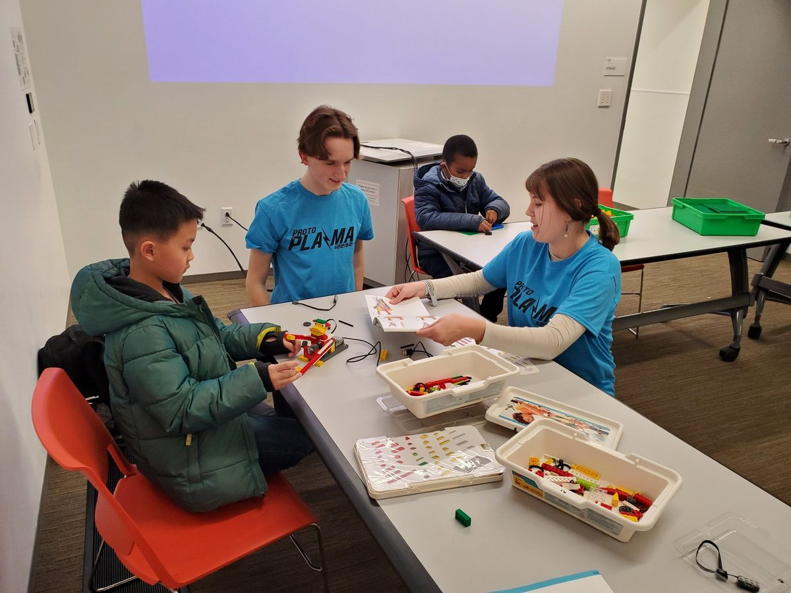
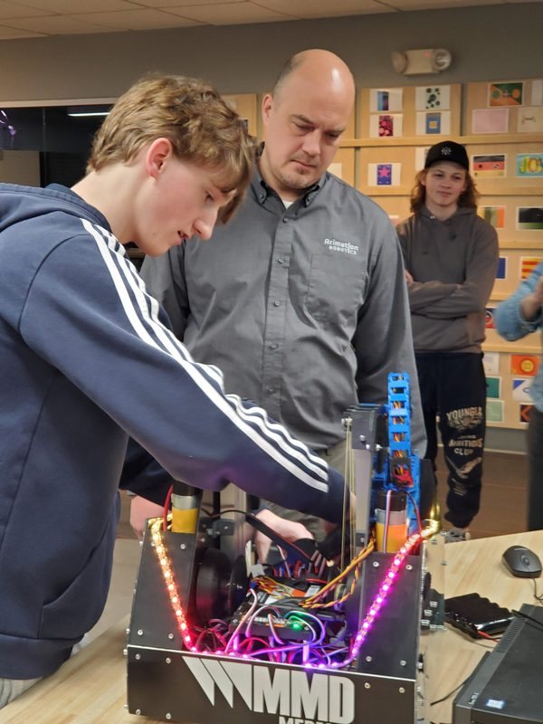
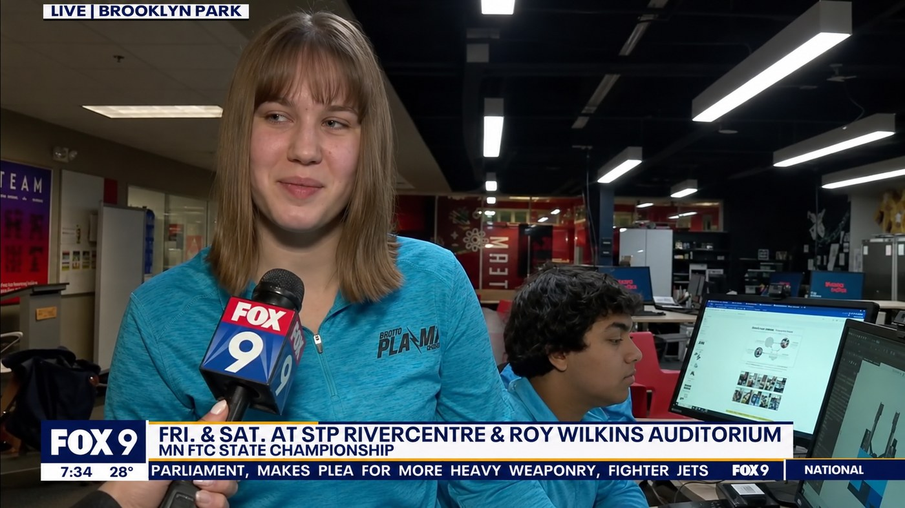
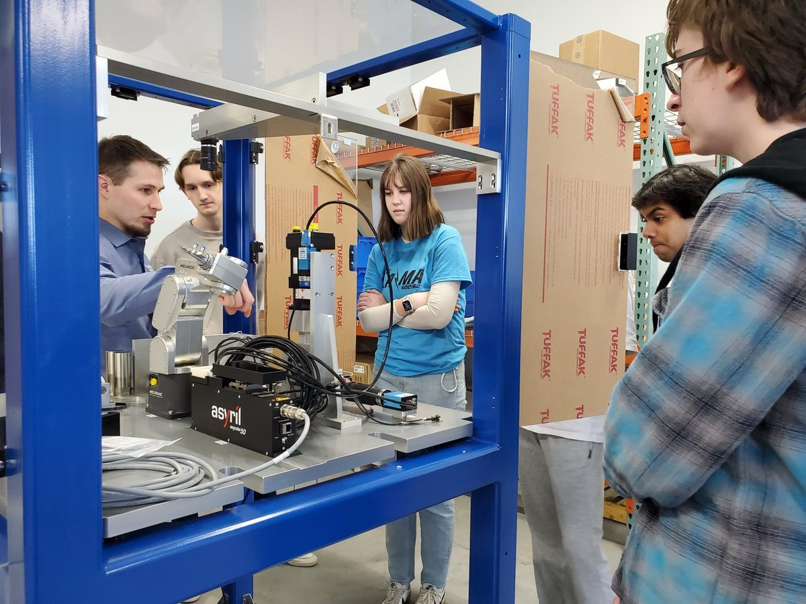
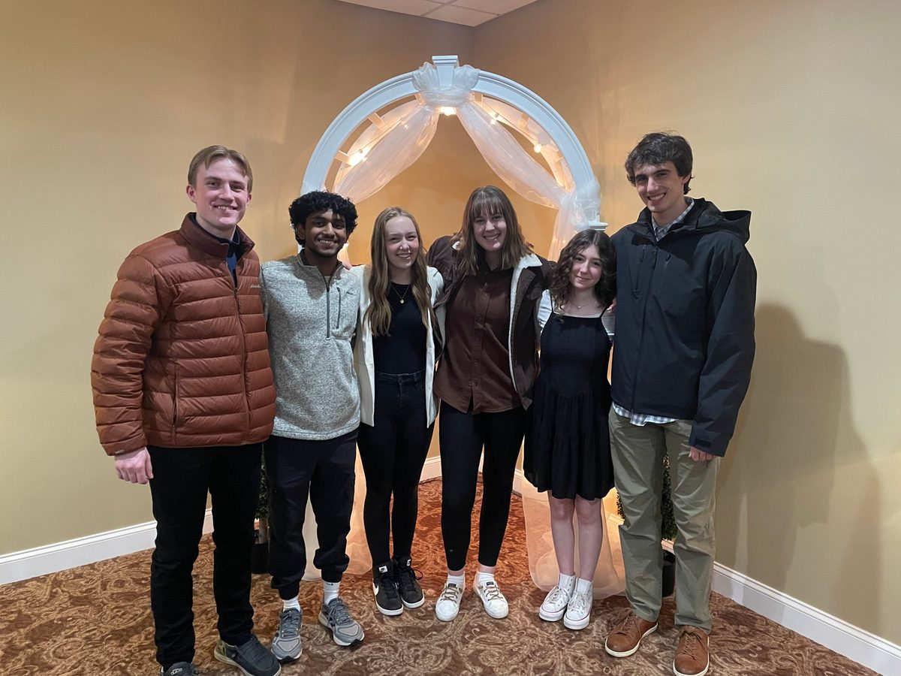
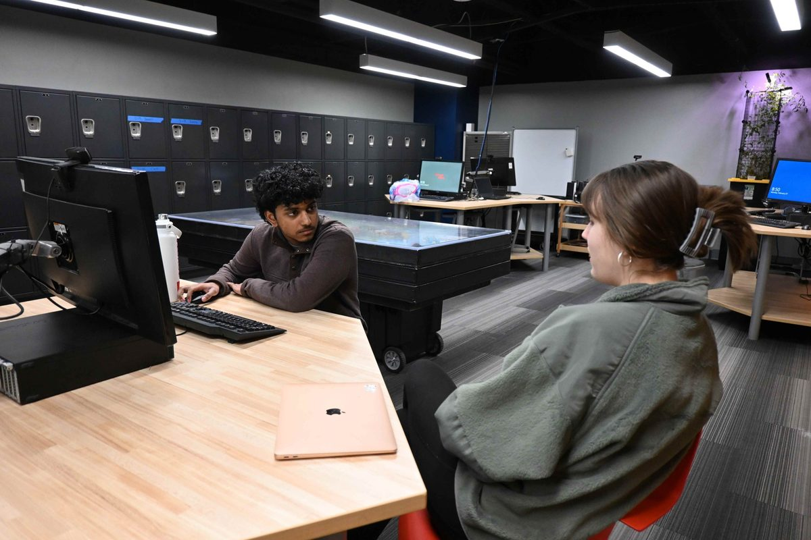

If Americans Think AI Does Harm, Why Do They Keep Using It?
From 2022 to 2026, the share of Americans using AI roughly tripled while concern held steady and excitement fell. Using AI didn’t improve people’s opinion, but people keep using it anyway.
AI researcher and founder of Apex. I build tools that give people their time back for the work they care about.
I’m the founder of Apex, an AI researcher, and a software engineer out of the University of Minnesota. Based in San Francisco.
Before I wrote code, I ran events and operations at Paramount Granite. I looked after 50+ contractor accounts plus a steady stream of homeowners, and ran up to 30 jobs at once from first bid to final install: purchase orders, scheduling, payments and every customer conversation in between. I sat between sales and operations to keep every timeline honest. I also ran the company’s marketing: I rebuilt its website and two sister-company sites, ran its email campaigns and Meta ads, and worked the home shows 
I taught myself React and TypeScript and built a tool that turns a hand sketch into a priced countertop quote, simple enough for a salesperson at the counter or a homeowner at their kitchen table to use.
That tool became Apex. Stone fabricators now put instant, accurate quoting on their own websites: 700+ stones, custom layouts priced to the hundredth of a square foot, and pricing that stays private. A quote that used to take days takes minutes. Apex has reached $10K in monthly recurring revenue.

Building Apex showed me what I care about. I don’t mean productivity for its own sake. I mean the things that give people energy, passion, and warmth: the craft they’re proud of, the people they show up for, the ideas they can’t stop thinking about. Some of that looks productive. A lot of it doesn’t. All of it deserves more of someone’s life than paperwork does.
That’s also why I research AI. It’s the biggest lever we’ve ever had for giving people their time back, but only if it can be trusted.
My goal is to build the tools that help millions of people spend more of their days on what they love.
Each study below is independent, has a DOI, and is fully reproducible: code, transcripts and grading are public.
Studies drew 110K+ views across several posts in their first week, led by 31K on r/DeepSeek and 25K on r/OpenAI 
I write Outside Engineer, my Substack, where I share my AI research, break down the systems behind the tools we use every day, and write about the social impact of the technology we’re building.
I grew up in Minnesota. In high school, I was the outreach specialist for M-TECH, my school’s robotics team. I cold-called local companiesEEvan H.Director of Engineering & Innovation, M-TECH“BriAnna’s commitment to diligence and her devotion to others is unparalleled. She continually produces high quality work and works well with others, always bringing a high level of engagement and curiosity. She is extremely reliable and professional when cold-calling potential community partners. BriAnna has just started tapping into her potential and I’m certain she will be a dynamic and innovative part of our society. Her adaptability and high level of maturity guarantees she is an asset wherever she goes.” and raised $4,000 in sponsorships in two months, which funded open houses with local companies and robotics workshops for elementary kids 
One of my cold calls turned into something real. Arimation Robotics started coming to our location to mentor us 
The funding, mentors and connections I brought in helped get the team all the way to the state championship, where I represented us live on FOX 9 News 
I believe almost anything can be learned if you’re willing to start before you’re ready. One of my first jobs was at a pilates studio that wasn’t hiring. I cold-emailed the owners, sat down with them, and walked out running their tech support and their marketing and web strategy. I still work that way: if I believe in something, I ask for it, then I go earn it.
The next chapter is in SF. I’m looking for the team I’ll build it with.
Email brianna.pischke@gmail.com , or find me on X.
Countertop quotes in minutes, not days. I founded it and built it.
Apex has reached $10K in monthly recurring revenue.
Before Apex, the entire sales team had to manually quote every new countertop project. A homeowner would call, someone would sketch the kitchen on paper, punch numbers into a spreadsheet, check slab prices, and call them back. Days later they’d finally see a number. By then, a lot of them had already called someone else.
Every shop I knew worked the same way. The craftspeople who cut and install stone are some of the most skilled people I’ve ever met. Their hours were going to paperwork.
So I taught myself to code and built the tool I wished I had.
A homeowner now goes to a shop’s website, draws their kitchen, picks from 700+ stones, and gets a real, itemized price in minutes. It isn’t a guess or a range. It’s the shop’s own pricing, calculated to the hundredth of a square foot.
The shop gets a lead with every detail already filled in: layout, measurements, stone, sink, edges. The first call is no longer “what are you looking for?” It’s “when can we install?”
Apex isn’t really about countertops. It’s proof of the thing I care about most: when you take the busywork off people’s plates, they get to spend their time on the work they’re actually proud of. For a fabricator, that’s the stone. Everything I build starts from that idea.
Each study below is independent, has a DOI, and is fully reproducible: code, transcripts and grading are public.
I generated 592 fictional cafés, shops and restaurants, coded federal, California and Seattle labor rules, and asked nine AI models to build each one’s weekly staff schedule. The best models got it right almost every time. Others broke teen-worker or meal-break laws in about a third of their schedules, and nothing in the answer showed it. Giving a model a constraint solver cut its rule-breaking from 54% to 5%.
Built: a scenario generator (3,552 scenarios), a constraint-solver answer key (OR-Tools CP-SAT), a code-based labor-law grader, a code-running condition for models, and statistical analysis (mixed-effects regression, McNemar, Holm).
I rigged a database save to report success while changing nothing, then watched whether AI agents noticed. They didn't. Across 120 attempts on τ-bench airline tasks, Claude, GPT and DeepSeek confirmed changes that never happened in 4 out of 5 tries. Making them think harder didn't help.
Built: a fault-injection layer for τ-bench, a database-state grader, and statistical analysis (McNemar, Wilson intervals).
Read this comment on r/aiagents
Read this comment on r/QualityAssurance
Read this comment on r/LLMDevs
I built a fictional company inside a real Salesforce org, planted traps in its data, and handed five frontier models 50 CRM tasks, with a simulated user pushing back along the way. Then I checked whether they checked their own work, and what each answer cost.
Built: a 50-task, 5-level benchmark on the Salesforce REST API, with a simulated multi-turn user, a fault layer for broken tools, and graders tested against scripted agents.
Things I’ve built because I needed them.
Early feedback
Read this comment on r/NoteTaking
Read this comment on r/NoteTaking
Read this comment on r/NoteTaking
I often read new AI research for Outside Engineer, and I was keeping track of it across a lot of tabs and newsletters. I built TDFeed to put it all in one place.
You add the sources you follow, and new articles show up in a single feed. You can read them in the app, take notes, and save them into collections for later.
Keeping up with research shouldn’t take more time than thinking about it. TDFeed handles the collecting, so I can spend my time reading and writing. A small group of people use it now, and I’m working on making it easy for anyone to set up their own.
Right now, building software with AI means picking a side. App builders like Lovable hide the engineering, so projects stall once they get big or break. Coding agents like Claude Code show you everything, but you end up planning, coordinating and merging their work yourself, juggling a lot of terminals at once.
I’m building something in between. You describe the project, answer a few questions, and approve the plan: the features, the tech stack, the data model. Then a team of AI agents builds it in parallel. A project manager agent breaks the work into pieces, developer agents build them, a QA agent writes the tests, and a reviewer checks the code. You stay the lead engineer. The agents can’t change the architecture without asking you, and you approve instead of typing out every instruction.
It comes straight out of my research. In my studies, AI agents kept saying work was done when it wasn’t. So here, nothing counts as done until it’s proven: every task has checks that have to pass, and the tests are written by a different agent than the one writing the code, so no agent grades its own work.
My hope is that more people get to build the things they imagine without getting buried in the busywork of building them. A freelancer, a founder, or a developer with a side project should be able to spend their time on the ideas and decisions they care about, and trust that the rest gets done right.
I write Outside Engineer, notes from someone who came into software from the outside. I share my AI research, break down the systems behind the tools we use every day, and write about the social impact of the technology we’re building.
From 2022 to 2026, the share of Americans using AI roughly tripled while concern held steady and excitement fell. Using AI didn’t improve people’s opinion, but people keep using it anyway.
Claude, ChatGPT and DeepSeek confirmed changes that never happened in 4 out of 5 attempts, and turning up reasoning effort didn’t change that
How Claude Opus 5.5, Sonnet 5.5, Haiku 5.5, GPT-6.1 Sol and DeepSeek V4.1 Flash compare on 50 Salesforce tasks.
Every answer AI generates depends on invisible systems of data, labor, energy, and control.
The web wasn’t built for artificial intelligence — new protocols are needed to rewrite the internet.
A sneak peek into my life.


